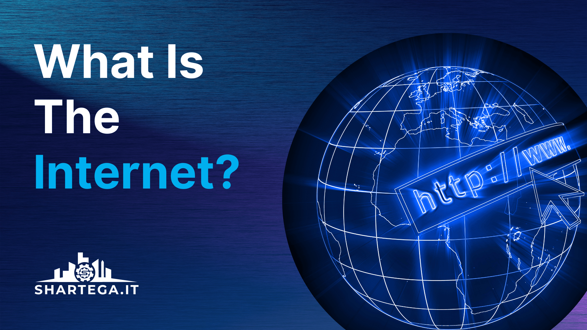

The Internet

The Internet is a vast, global collection of interconnected networks that operate as a single, massive entity. Often referred to as a "Network of Networks," it links millions of private, public, academic, business, and government networks together. It is the physical and logical foundation that allows a computer in one corner of the world to communicate with a server in another almost instantaneously.
How It Works
While people often use the terms "Internet" and "World Wide Web" interchangeably, the Internet is actually the underlying infrastructure. It is composed of hardware (routers, servers, fiber-optic cables) and software protocols. The most critical of these is the TCP/IP protocol suite, which ensures that data sent from any device can be understood by any other device, regardless of the brand or operating system.
Key Services of the Internet
The Internet serves as the foundation for a wide variety of essential services. While many people think only of the Web, the Internet actually facilitates several distinct types of data exchange:
- Electronic Mail (Email)
- Email is one of the oldest and most widely used services on the Internet. It allows for the fast, asynchronous digital exchange of messages and documents between users globally, operating on protocols like SMTP and IMAP.
- File Transfer Protocol (FTP)
- FTP is a standard network protocol used specifically for the transfer of computer files between a client and a server on a computer network. It is essential for moving large datasets and managing website files behind the scenes.
- The World Wide Web (WWW)
- The Web is a massive system of interlinked hypertext documents accessed via the Internet. It uses the HTTP protocol to transmit data and allows users to view multimedia content through software called a web browser.
- Streaming & VoIP
- These technologies allow for the real-time transmission of audio and video. Voice over IP (VoIP) powers digital phone calls and meetings, while streaming services allow users to consume media without downloading the entire file first.
By connecting millions of users, the Internet has transformed from a military and academic tool into the primary platform for global participation and commerce.
Explore the Terminology
Network Foundations
- The Internet - The global network of networks.
- TCP/IP Protocol - The language of the internet.
- IP Addressing - How devices are located.
- Intranets & Extranets - Private vs. Shared networks.
The Navigation Layer
- DNS (Domain Name System) - The internet's phonebook.
- URLs, URIs, & URNs - Identifying resources.
- Top Level Domains (TLDs) - Understanding .com, .org, and .ke.
Web Technologies
- World Wide Web - The information retrieval system.
- HTTP & HTTPS - How data is transferred.
- Web Applications - Dynamic vs. Static content.
- Web Servers & Browsers - The Client-Server model.